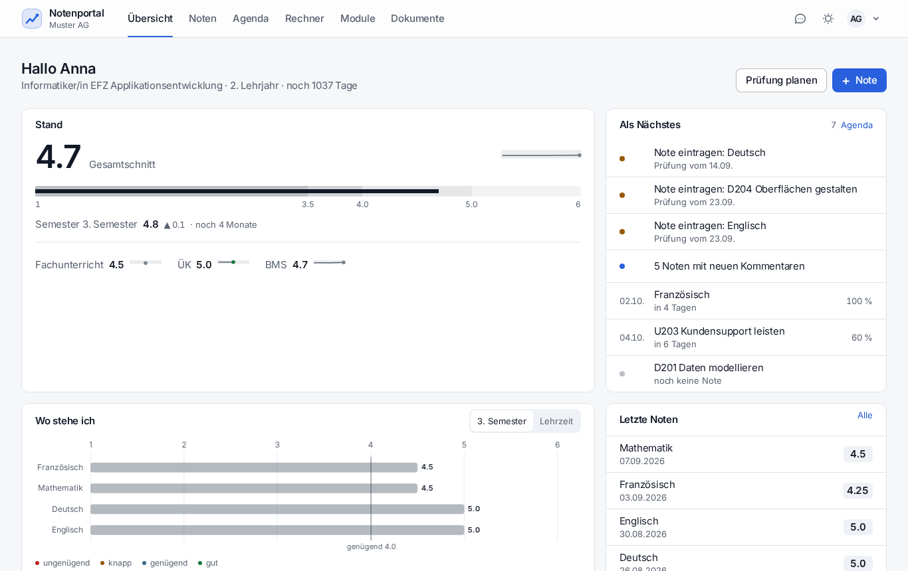
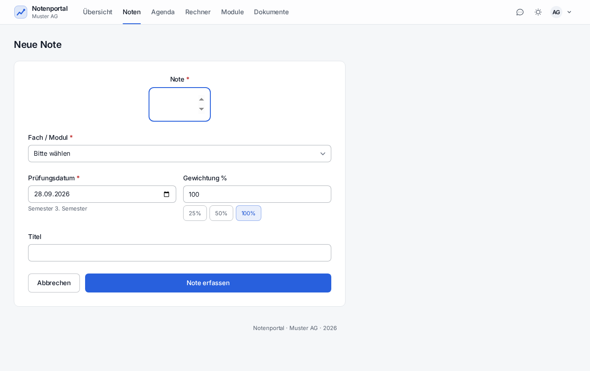
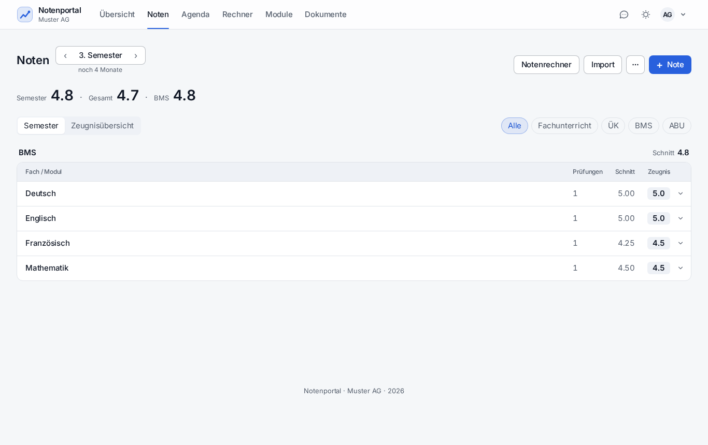
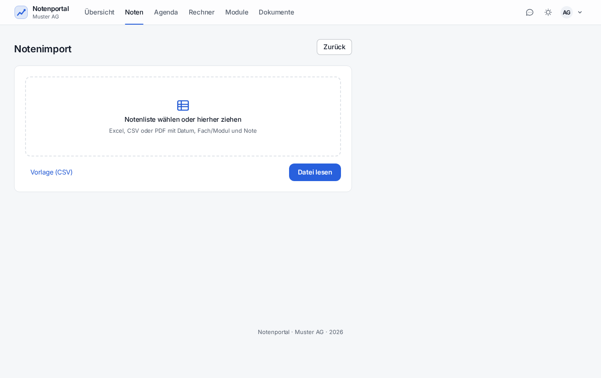
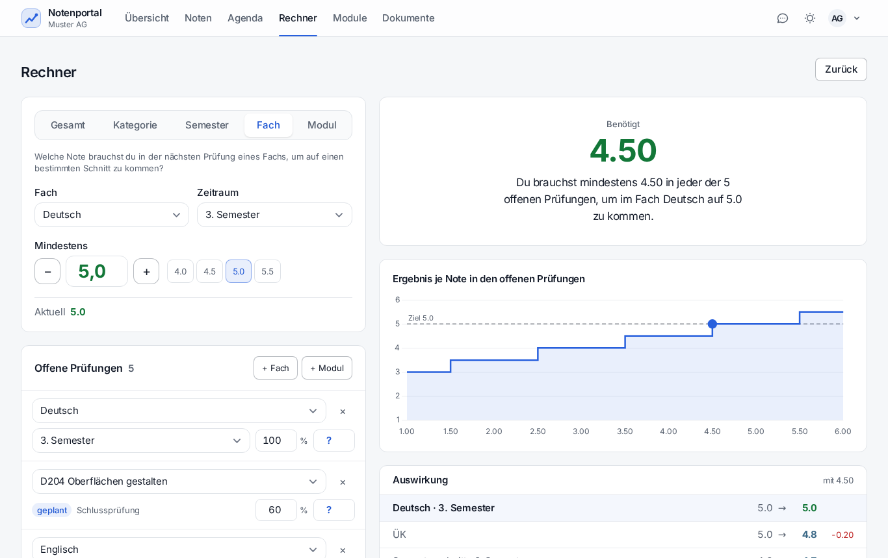
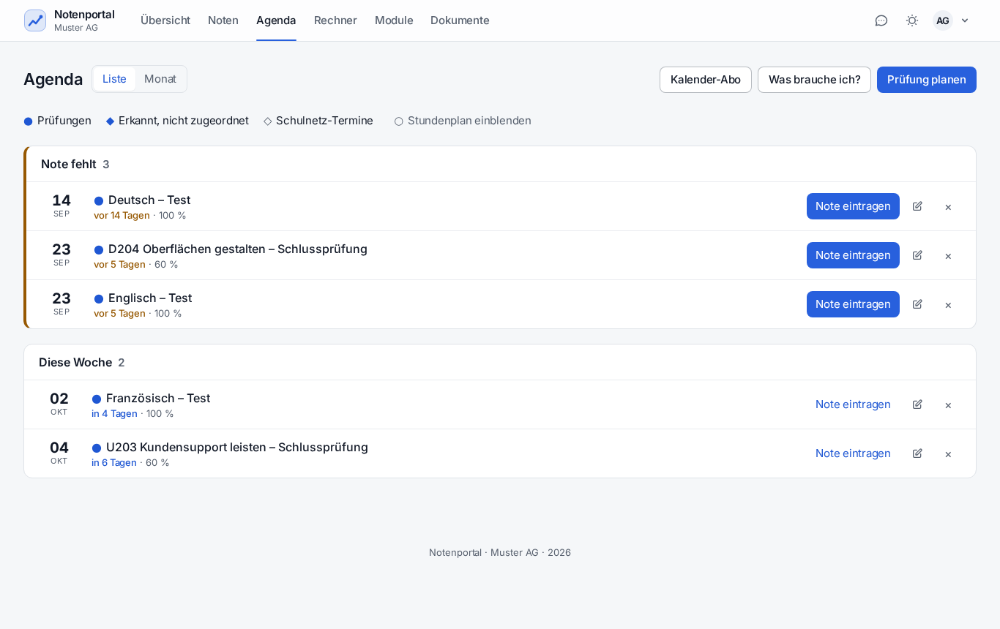
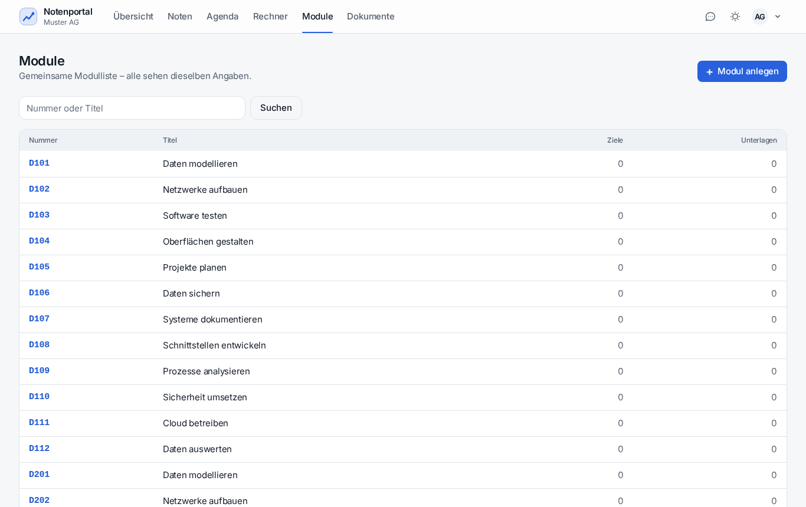
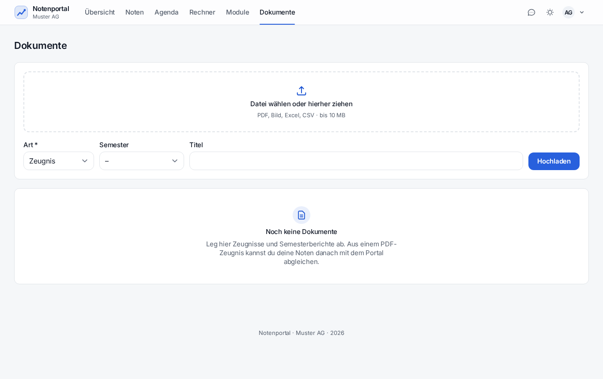
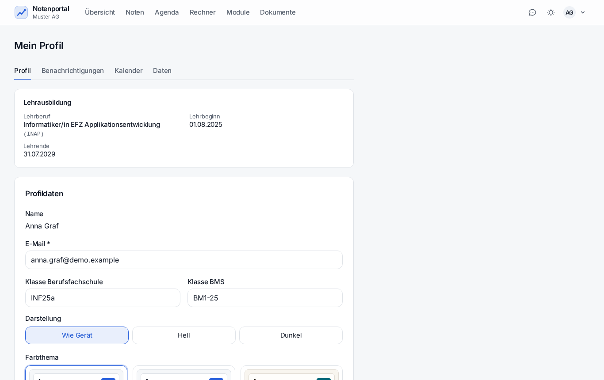
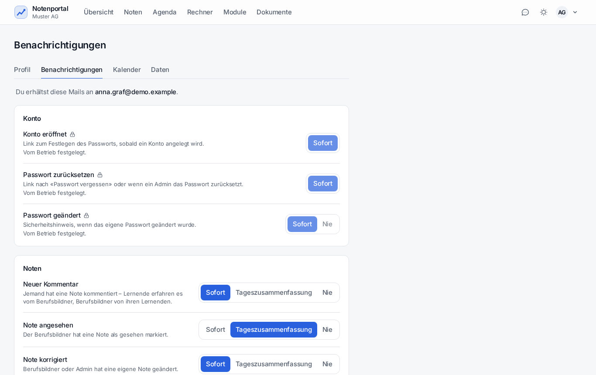

Adresse im Browser öffnen, mit E-Mail und Startpasswort anmelden.
Das Portal verlangt sofort ein eigenes Passwort – mindestens 8 Zeichen.
Fertig. Die Übersicht zeigt ab der ersten Note Zahlen.
Übersicht lesen

Oben Gesamt-, Semester- und Kategorienoten, daneben «Als Nächstes» mit den nächsten Prüfungen, unten Verlauf und letzte Noten.
«Als Nächstes» sammelt, was offen ist: überfällige Prüfungen ohne Note, neue Kommentare des
Berufsbildners, fehlende Module.
Note erfassen

Vier Angaben genügen: Note, Fach oder Modul, Datum, Gewichtung.
Noten → «Note erfassen» (oder einfach Taste n).
Note eintragen – Viertelnoten sind erlaubt (4.25, 4.5 …).
Fach / Modul wählen. Die Liste zeigt, was der eigene Lehrberuf vorsieht.
Prüfungsdatum: Daraus bestimmt das Portal das Semester; es steht gleich darunter.
Gewichtung: 100 % ist der Normalfall, 25 % und 50 % gibt es als Knopf.
Titel ist freiwillig, hilft aber später («Vokabeltest Kapitel 3»).
«Note erfassen» – der Schnitt oben aktualisiert sich sofort.
Die Kategorie wird nicht gefragt: Sie ergibt sich aus dem Fach bzw. dem Lernort des Moduls und ist darum immer richtig.
Noten ansehen

Je Semester: Kategorie → Fach/Modul mit Zeugnisnote, Schnitt vor der Rundung und Promotionsstand.
Ein Klick auf eine Zeile öffnet die einzelnen Noten. Titel lassen sich direkt in der Liste ändern.
Ganz unten steht die Zeugnisübersicht über die ganze Lehrzeit als Farbraster.
Noten aus einer Datei übernehmen

Excel, ODS, CSV oder PDF – auch das Schulnetz-PDF «Aktuelle Noten».
Noten → «Importieren», Datei hineinziehen.
Das Portal erkennt die Spalten und ordnet Fach oder Modul zu; Dubletten sind markiert.
In der Vorschau falsche Zeilen korrigieren oder abwählen.
«Übernehmen». Es gelten dieselben Regeln wie beim Erfassen von Hand.
Wer eine eigene Liste führt: Auf derselben Seite gibt es eine CSV-Vorlage.
Rechnen: Was wäre wenn?

Vorwärts: angenommene Noten eintragen und die Wirkung sehen. Rückwärts: Ziel eintragen und die nötige Note ablesen.
Nichts davon wird gespeichert – es ist reine Simulation. Für einen schnellen Blick gibt es den
Rechner auch direkt auf der Notenseite («Notenrechner»).
Prüfungen planen

Agenda: kommende Termine, überfällige ohne Note, nach Woche gruppiert.
Agenda → «Prüfung planen»: Fach oder Modul, Datum, Gewichtung, optional Stoff und Hilfsmittel.
Ist die Prüfung vorbei, erscheint sie unter «Als Nächstes». «Note erfassen» übernimmt Fach, Datum und Gewichtung.
Die Note hängt danach an der Prüfung. Wird sie gelöscht, ist die Prüfung wieder offen.
Schulkalender einlesen
Einstellungen → Kalender → «Kalender hinzufügen».
Die iCal-Adresse aus Schulnetz, Nextcloud, Outlook («Kalender veröffentlichen») oder Google («Privatadresse im iCal-Format») einfügen.
Wählen, was übernommen wird: Lektionen, Termine, Prüfungen.
Danach gleicht das Portal stündlich ab. Wer ein übernommenes Feld selbst ändert, sperrt genau
dieses Feld – der eigene Wert bleibt, «Wieder vom Kalender übernehmen» hebt die Sperre auf.
Absagen der Schule kommen immer durch. Geschrieben wird nie etwas zurück.
Module

Gemeinsame Modulliste – ein Datensatz je Modul für alle.
Modul fehlt? Selbst anlegen: Nummer, Titel, Beschreibung, Handlungsziele. Alle sehen es sofort.
Unterlagen (PDF, Bild, Word, OpenDocument bis 20 MB) hängen am Modul, nicht an einer Person.
«Zu meinen Modulen hinzufügen» stellt ein Modul in die eigene Notenerfassung – auch wenn der Lehrberuf es nicht vorsieht. Die eigenen Noten bleiben privat.
Modul wiederholen: Die laufende Belegung schliessen; ab der ersten neuen Note zählt nur noch der neue Versuch.
Dokumente

Zeugnisse, Notenlisten und Sonstiges, nach Art und Semester abgelegt.
Hineinziehen genügt (bis 10 MB). Ein Zeugnis lässt sich gegen die berechneten Zeugnisnoten
prüfen: «Abgleichen» zeigt je Fach stimmt / abweichend / fehlt und übernimmt Fehlendes auf
Wunsch als Note «Zeugnis».
Einstellungen

Einstellungen → Profil: Konto, Passwort und Darstellung mit Live-Vorschau.
Pro Anlass: sofort, in der Tageszusammenfassung (18:00) oder nie. Vom Admin erzwungene Anlässe sind gesperrt sichtbar
Kalender
Eigenes Prüfungsabo nach aussen, eingelesene Kalender
Daten
Alle eigenen Daten als ZIP herunterladen (Art. 25 DSG)

Je Anlass eine Wahl: sofort, Tageszusammenfassung oder nie. Gesperrte Zeilen hat der Betrieb vorgegeben.
Notenblatt drucken
Noten → «Notenblatt»: Zeugnisnoten je Semester, Prüfungen, Promotion und Unterschriftenzeilen,
fertig für Papier oder PDF. Daneben gibt es einen CSV-Export der Rohnoten.